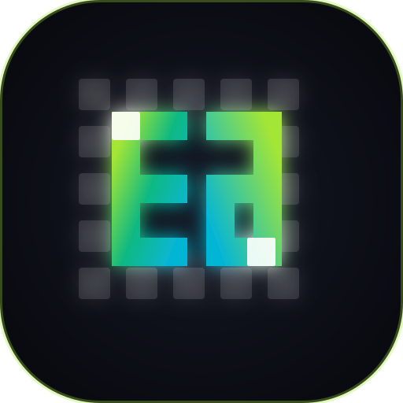

Transform Your Images Into Retro Pixels
Upload a photo or illustration. Adjust sizing, apply classic retro color palettes, and dither to get that vintage game aesthetic entirely offline.

Upload a photo or illustration. Adjust sizing, apply classic retro color palettes, and dither to get that vintage game aesthetic entirely offline.